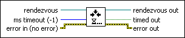
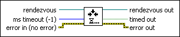

Wait at Rendezvous VI
Owning Palette: Rendezvous VIs
Requires: Base Development System
Waits until a sufficient number of tasks have arrived at the rendezvous.

 Add to the block diagram Add to the block diagram |
 Find on the palette Find on the palette |
Owning Palette: Rendezvous VIs
Requires: Base Development System
Waits until a sufficient number of tasks have arrived at the rendezvous.

| Add to the block diagram |
Find on the palette |
 |
rendezvous is a reference associated with a rendezvous. |
 |
ms timeout specifies how many milliseconds the function should wait for other tasks to arrive at the rendezvous. The default is –1, indicating never to time out. |
 |
error in describes error conditions that occur before this node runs. This input provides standard error in functionality. |
 |
rendezvous out has the same value as rendezvous. |
 |
timed out is TRUE if not enough tasks arrived before the function timed out or if an error occurred. |
 |
error out contains error information. This output provides standard error out functionality. |
If the number of tasks, including the new one, waiting at rendezvous is less than the rendezvous size, the VI waits ms timeout milliseconds before timing out. If enough tasks arrive at the rendezvous during the wait, timed out is FALSE. If enough tasks do not arrive or rendezvous is not valid, timed out is TRUE.